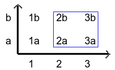

Relations
We often need to relate the elements of a set to those of another set or to other elements of the same set: take for example the equality relation among the elements of a given set. In working with the integers, we encounter relations such as "x is less than y" and "x is a factor of y". These relations can all be described by the following definition.
Definition 1.3.1. (Relation). Let A and B two nonempty sets, a relation indicated with ℜ is the subset ℜ ⊆ A x B
When A = B, we say that ℜ, is defined on A. Intuitively a relation ℜ in A is a law that to each element of a subset A (that could also be the whole A), associates one or more elements of A itself.
Instead of writing (a,b) ∈ ℜ, it is usually written a ℜ b.
When we build up a set by choosing only some elements of a cartesian product we are creating a relazion. Cosider the following example given by the cartesian product [a,b] x [1,3]:
By choosing some pairs of the cartesian product we obtain a subset (relation) like that enclosed in the blue frame ℜ= { (2a), (2b), (3a), (3b) }. The term relation is thus justified since we are relating the elements
Definition 1.3.2 - Let A a set. A relation ℜ on A is a subset of A x A. If (a,b) ∈ ℜ then we write a ℜ b and we say that a is related with b through the relation ℜ.
Examples
the relation ≤, defined on ℕ.
the relation of being friend of, defined on a given group A of people.
la relazione ℜ costituita da tutte le coppie (a,b) di ℝ x ℝ tali che a + b = 1: geometricamente, questa relazione coincide con la retta x + y = 1 del piano ℝ x ℝ.
There exists multiple relations which can be chatergorized based on the the property they satisfy
Functional relations
Ordering relations
Equivalence relations
Functional relations are simply functions, quindi un abbinamento in cui il secondo elemento è univocamente determinato dal primo: ad esempio nella coppia (a,b) the element b is unique with respect to a.
Equivalence relation
Definition 1.3.3. An equivalence relation indicated with the symbol ∼ (to be read "equivalent to", from left to right) is a binary relation on a set A satisfying the following conditions:
x ∼ x ∀x ∈ A Reflexive Property
x ~ y implies y ~ x ∀x,y ∈ A Symmetric Property
x ∼ y and y ~ z imply x ∼ z ∀ x,y,z ∈ A Transitive Property
Two element that satisfy the conditions above are said equivalent for the relation ∼: the symmetric propery allow us to disregard the order in which the elements appear in the relation.
Definition 1.3.4. If A is a set and if ~ is an equivalence relation on A, then the equivalence class in A is the subset of all those elements of A which are related to a by the relation ~. Usually it is indicated by [x]∼ or {x}∼. Symbolically
[a] = {x ∈ A | a ~ x}
Observe that equivalence class is never empty as a ∈ [a].
Grazie a una relazione di equivalenza R, l’insieme I può dividersi in classi, dette classi di equivalenza, riunendo elementi equivalenti in una stessa classe;
The set of equivalence classes under ∼ is called the quotient set of A with respect to ∼; it is usually indicated as A / ∼. An equivalence relation on a set induces a partition on it, and any partition induces an equivalence relation.
per indicare le relazioni di equivalenza si utilizza spesso il simbolo ~. Quindi (x, y) ∈ ℜ, può essere espresso tramite la notazione x ~ y.
Esempi di relazione di equivalenza
The equality relation defined on a set A
Considerando l'insieme degli abitanti di una nazione, la relazione "abita nella stessa città" è di equivalenza: infatti è contemporaneamente riflessiva, simmetrica e transitiva
Considerando i numeri naturali, la relazione "è maggiore od uguale a" non è di equivalenza: è riflessiva e transitiva, ma non è simmetrica (è antisimmetrica)
Considerando una famiglia, la relazione "è fratello di", è di equivalenza: infatti è riflessiva, simmetrica e transitiva.
Considerando una famiglia, la relazione "è padre di", non è di equivalenza: infatti non è riflessiva né simmetrica né transitiva.
La relazione P di parallelismo nell'insieme delle rette del piano, dove r P s significa "la retta r è parallela alla retta s, è una relazione di equivalenza.
Definition 1.4. Un sottoinsieme di S che contiene tutti e soli gli elementi equivalenti a un qualche elemento a di S prende il nome di classe di equivalenza di a per la relazione ∼, (o classe di equivalenza modulo ~). Denotiamo con Ca o con [a], la classe di equivalenza di un elemento a ∈ S:
[a] := {b ∈ S | b ~ a}
per la proprietà riflessiva a ∈ Ca. Quindi le classi Ca sono non vuote.
Ad esempio se P è la relazione di parallelelismo delle rette del paino e r una retta, la classe di equivalenza Cr è l'insieme delle rette del piano parallele a r.
Determinanre una relazione di equivalenza su un insieme A equivale a determinare una sua partizione. Vale infatti il seguente teorema:
Theorem 1.5. Sia ℜ una relazione di equivalenza su un insieme A. L'insieme delle classi di equivalenza distinte rispetto a ℜ costituisce una partizione di A.
Proof. Occorre dimostrare che se Ca e Cb hanno un elemento in comune, x, allora Ca = Cb. Se risulta a ~ b, deve anche essere Ca = Cb.
Sia x ∈ Cb. Allora x ~ b. Poiichè a ~ b, allora segue a ~ x, dunque x ∈ Ca. Pertando Cb ⊂ Ca. L'inclusione opposta, Ca ⊂ Cb, si ottiene scambiando i ruoli di a e b. Pertato si ha la tesi.□
Relazione d'ordine
Definition 1.6. Dato un insieme A, una relazione si dice relazione d'ordine (ordinamento) in A se essa presenta le seguenti proprietà:
antisimmetrica: (x, y) ∈ ℜ implica (y, x) ∉ ℜ
transitiva: (x, y) ∈ ℜ e (y, z) ∈ ℜ implicano (x, z) ∈ ℜ
Scriveremo più semplicemente al posto di (x, y) ∈ ℜ:
x ≺ y; oppure y ≻ x
che va letta come "x precede y" oppure "y segue x". L'insieme A è detto parzialmente ordinato, se A è dotato di una relazione di ordine  . Per denotare una tale insieme si si usa talvota la notazione (A, ).
. Per denotare una tale insieme si si usa talvota la notazione (A, ).
Ordinamento Totale
Definition 1.7. (Ordinamento totale). Un ordinamento in A viene detto totale se oltre alle proprietà transitiva e antisimmetrica gode anche della seguente:
Per ogni coppia (x, y) ∈ A con x ≠ y sussiste una delle due relazioni:
(x,y) ∈ ℜ , (y, x) ∈ ℜ
Consideriamo un insieme A di n elementi. Si può realizzare una corrispondenza biunivoca tra A e l'insieme dei numeri naturali {1, 2, .., n}. Tramite questa corrispondenza possiamo indicizzare gli elementi di A:

In questo modo, l'insieme A risulta essere totalmente ordinato rispetto alla realzione d'ordine:

Chiaramente esistono altri ordinamenti possibili. Si chiama permutazione dell'insieme A di n elementi, l'insieme A a cui è stata assoiata una relazione d'ordine.
L'ordinamento dei numeri reali
I numeri reali diversi da zero si dividono in positivi che generano il sottoinsieme ℝ+ e negativi quello ℝ-, abbiamo quindi la partizione:
ℝ = ℝ− ∪ 0 ∪ ℝ+
è utile definire anche
ℝ* = 0 ∪ ℝ+
piuttosto che scrivere x ∈ ℝ+ scriveremo più semplicemente x > 0
Si può quindi definire un ordinamento tra numeri reali, scrivendo:

L'insieme ℝ è quindi totalmente ordinato in quanto presi comunque due numeri reali distinti x e y è sempre vera una sola delle due condizioni :
x < y or y > x
ed inoltre:
x ≤ y ⇔ x < y or x = y
Proposition 1.8. Sia E una relazione di equivalenza definita su un insieme A. Siano a,b ∈ A. Allora
[a] = [b] ⇐⇒ aEb altrimenti aɆ b
Proof. Let aEb (from which also bEa). We prove that [a] ⊆ [b] ([b] ⊆ [a]) it follows then from bEa, by inverting the roles of a and b; so we conclude that [a] = [b]). Let c ∈ [a]. Then aEc; from bEa and from the transitive property, bEc; follows that c ∈ [b]. Let now a Ɇ b, cioè a is not related with b through E. If there exists a c ∈ [a] ∩ [b], it holds both tht aEc and bEc, thus aEB: a contradiction. So it must be [a] ∩ [b] = ∅.□
Proposition 1.9. Let ρ an equivalence relation defined on a set A. We define quotient set of A with respect to ρ, and we indicate it as A / ρ, the set of all equivalence classes modulo ρ. In symbols
A/ρ := {[a] | a ∈ A}
The previous proposition states that equivalent elements a in A are transformed in a single element, [a] of A/ρ.
Partitions
Definition 1.10. Dicesi partizione di un insieme A una suddivisione di tale insieme in sottoinsiemi Aα disgiunti: Ossia tali che
Uα Aα = A (le parti ricoprono A)
Aα ⋂ Aβ ≠ 0 ⇐⇒ Aα = Aβ (le parti o coincidono o sono disgiunte)
si ha quindi:
A = unione di sottoinsiemi non vuoti disgiunti
Per esempio gli insiemi
{2,3}, {1,5}, {4}
formano una partizione dell'insieme {1,2,4,5}
I due insiemi, degli interi pari e degli interi dispari, formano una partizione dell'insieme ℤ di tutti gli interi.
Una partizione di un insieme A è qundi un insieme Π di sottoinsiemi, tali che ogni elemento di A appartiene ad uno e un solo dei sottoinsiemi dati.
Theorem 1.2.11. Sia ρ una relazione di equivalenza in A. Le classi di equivalenza di A modulo ρ costituiscono una partizione di A.
Proof. (1) Ricoprono A: infatti, essendo a ρ a per ogni a ∈ A, ogni a ∈ A, appartiene alla sua classe di equivalenza. (2) Le classi di equivalenza o coincidono o sono disgiunte: sia z ∈ [a] ⋓ [b], cioè siano [a] e [b] non disgiunte. Allora z ρ a e z ρ b, da cui, per simmetria e transitività, a ρ b. In base alla Proposizione 1.8, [a] = [b], ossia le due classi coincidono.□
Theorem 1.2.12. Ogni partizione di un insieme A determina su A una relazione di equivalenza, per la quale i sottoinsiemi della partizione sono le classi di equivalenza.
Proof. Indicati con Aα i sottoinsiemi della partizione,
I due teoremi precedenti asseriscono che i concetti di partizione e di relazione di equivalenza sono equivalenti.
In definitiva, le proprietà di riflessività, simmetria e transitività, proprie delle relazioni di equivalenza, caratterizzano oggetti che non sono (necessariamente) uguale, ma che tali possono venir considerati limitamente a particolari scopi.
Esistono altre proprietà che confrontano oggetti tra loro diversi e dicono ad esempio quando uno dei due oggetti è "più grande" o "più piccolo" di un altro. Precisiamo tali proprietà e le relazioni ad esse legate.
Definition 1.2.13. Una relazione ρ definita su un insieme A si dice antisimmetrica se
a ρ b, b ρ a ⇒ a = b
Definition 1.2.14. A relation ρ defined on a set A is said partial ordering relation if it is reflexive, antisymmetric and transitive. In other words, a relation ρ on a set A is a partial ordering relation if:
(Reflexive): a ρ a ∀a ∈ A.
(Antisymmetric): If a ρ b and bρa then a = b.
(Transitive): If aρb and bρc then aρc.
In practive a partial ordering relation is frequently denoted by '≤0. The satement a ≤ b is read "a precedes b" or simply as "a is less than or equal to b". With this symbolism the relations of partial ordering appear in the following form
(Reflexive): a ≤ a ∀a ∈ A.
(Antisymmetric): If a ≤ b and b ≤ a then a = b.
(Transitive): If a ≤ b and b ≤ c then a ≤ c.
The A is said then partially ordered set by the relation ρ
Composition of relation
Let A,B and C be ordinary sets. Let R be a relation from A to B, and let S be a relation from B to C. The composition of R and S is a new relation (called composite relation) denoted R ∘ S and defined by
R ∘ S = {(a,c) |(a,b) ∈ R, (b,c) ∈ S, a ∈ A, b ∈ B, c ∈ C}
The composition of two relation can be extended to the composition of n relations as R1 ∘ R2 ∘ ... ∘ Rn. Since composition operation is associative, that is, (R1 ∘ R2) ∘ R3 = R1 ∘ (R2 ∘ R3), we can drop the parentheses and simply write R1 ∘ R2 ∘ R3.